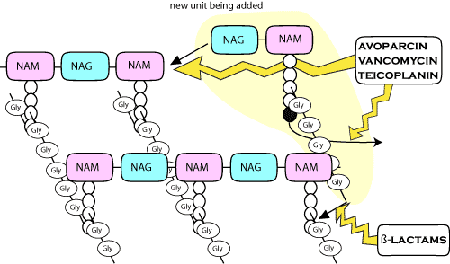

β-lactam structure diagram
bacterial cell wall diagram
Williams classification
| generation | spectrum | veterinary drugs | human drugs |
| 1 oral | good G+, moderate G-, not Pseudomonas | cephalexin, cefadroxil | cephalexin, cefadroxil, cephradine |
| 1 parenteral | very good G+, moderate G-, not Pseudomonas | cephalothin, cephaloridine, cefapirin, cephalonium | cephazolin, cephradine |
| 2 oral | fair G+, good G-, not Ps | cefaclor | |
| 2 parenteral | fair G+, good G-, not Ps | cefuroxime | cefuroxime, cephamandole |
| 3 | moderate G+, very good G-, some activity against Ps and Bacteroides | ceftiofur | cefotaxime |
| 3 antipseudomonal | moderate G+, very good G-, good Ps | ceftazidime, cefoperazone, ceftriaxone | |
| 4 | very good G+, very good G-, good Ps, Bacteroides, E. faecalis | cefquinome | cefpirome, cefepime |
cephamycins |
moderate G+, good G-, not Ps, good Bacteroides |
latamoxef, cefotetan, cefoxitin |
| group | spectrum | drugs |
| oral | good G+, moderate G-, not Pseudomonas | cephalexin, cefadroxil, cefaclor |
| parenteral 1 | very good G+, moderate G-, not Pseudomonas | cephalothin, cephazolin, cephaloridine, cefapirin |
| 2 | fair G+, good G-, not Pseudomonas | ceftiofur, cefuroxime, cephamandole |
| 3 | good Pseudomonas | ceftazidime, cefoperazone, ceftriaxone |
| cephamycins | moderate G+, good G-, not Ps, good Bacteroides | latamoxef, cefoxitin |
There are lots of cephalosporins - these are the ones available in NZ at the moment or likely to get here soon. The spectra of activity are broad generalisations, there are big differences between drugs!
Cephalosporins are also β-lactams. They should be reserved for cases where culture and sensitivity indicates that they are the most appropriate choice. The use of cephalosporins in empirical therapy cannot be justified (but is often done in practice).
Cephalosporins discovered before 1974 have traditionally been spelt with a ph, while more recent drugs use an f. The current INNs all use an f and incorporate other spelling changes as well such as t instead of th. To save confusion, names here are BAN / USAN.
Same as penicillins.
The synthesis of bacterial cell walls.
There are many different cephalosporins (certainly far too many to memorise their names). They can be roughly divided into three broad groups (generations) but this classification breaks down with the newer drugs. For instance, the commonly used veterinary drug ceftiofur is technically a third generation cephalosporin but is clinically identical to a typical second generation cephalosporin.
First generation (or natural) cephalosporins are broader in spectrum than penicillins, somewhat comparable to ampicillin. They tend to be effective against β-lactamase producing Staphylococci. eg cephalexin, cephalothin
Second generation cephalosporins are more effective for Gram negative organisms, but retain their Gram positive activity, although slightly reduced in comparison to first generation. They are frequently active against anaerobic bacteria. eg cefuroxime
Third generation cephalosporins have predominantly Gram negative activity, and also have reasonable activity against anaerobic bacteria. eg cefotaxime
There are also several drugs classified as fourth generation.
More rational ways of classifying cephalosporins on spectrum of activity have been proposed. The Williams system is most commonly used.
Mainly by extended spectrum β-lactamases, either inherent or chromosomally transmitted (particularly Pseudomonas, and more recently, coliforms). Plasmid mediated resistance can also occur. Reduced membrane permeability is probably less important, although this can produce cross resistance with other classes of antibiotic.
Bacteria generally resistant to cephalosporins include: MRSA and coagulase negative staphs, Enterococcus, Listeria, Clostridium difficile, atypical Pseudomonas spp and Campylobacter spp.
Third and fourth generation cephalosporins should be reserved for serious infections in people, and not used in animals. Ceftiofur is technically a 3rd generation drug but behaves more like a 2nd generation caphalosporin; even so, it is overused. Although it is registered for foot rot in cattle, this use is highly irresponsible. Second generation drugs should only be used for serious infections where nothing else is likely to work. Induction of extended spectrum β-lactamases by the indiscriminate use of generation 1 or 2 cephalosporins can confer resistance to generation 3 or 4 cephalosporins.
Allergic reactions occur, similarly to penicillins. Local tissue reactions at the site of injection also occur. Cephalosporins can lead to the development of a positive Coombs test (humans).
Some older cephalosporins caused kidney failure, particularly in combination with frusemide. These have now been withdrawn.
Prolonged therapy with some third generation cephalosporins can cause blood clotting disorders through inhibition of vitamin K metabolism (very rare).
Super-infections of the gastrointestinal tract have been reported.
There are big differences between individual drugs which influence their clinical use. Cephalosporins for parenteral use are poorly absorbed orally, but those prepared for oral administration are almost completely absorbed. Hepatic biotransformation occurs with some of these drugs and is usually deacetylation to active metabolites.
Most cephalosporins are excreted unchanged by the kidney (60 - 100%). The major exception is cefoperazone, which is 80% excreted in the bile. Most cephalosporins are secreted by the organic anion transporters, and therefore probenecid or aspirin inhibits their renal secretion, similarly to penicillins. However, cephaloridine, ceftazidime and ceftriaxone are almost 100% filtered, with negligible secretion.
In general, cephalosporins (particularly the newer ones) have short half lives in domestic animals (although they have been designed to have long half lives in people), and therefore should be dosed at least 8 to 12 hourly. In contrast, ceftiofur, licensed for use in cattle, has an active metabolite with a long half life, and therefore can be dosed every 24 hours. Note that this long dose interval is only appropriate for ceftiofur when being used for bovine respiratory diseases caused by Pasteurella spp, since they are extremely sensitive to ceftiofur. If using the drug off label, for other bacterial infections or in other species, some consideration should be given to increasing the dose frequency, possibly to every 12 hours or less. Ceftiofur is sometimes used in dairy cows as it has a zero milk withholding time. (It does not get into the milk at doses suitable for Pasteurella.)
Cephalosporins are grossly overused and abused in veterinary practice. A variety of oral cephalosporins are sold as broad spectrum antibiotics for small animals; ampicillin would work as well in most cases. Several first generation cephalosporins are sold for intramammary use in cows with mastitis. This use is easier to justify, as Staph. aureus is often resistant to penicillin, but cephalosporins are no better than cloxacillin. Clinical resistance in Staph. aureus is usually caused by drugs failing to get to the bacteria, cephalosporins are no better than penicillins in this respect.
Ceftiofur is licensed to treat foot rot in cattle (not a sensible use of a valuable drug) as well as respiratory disease in cattle, pigs and horses. The cattle dose is based on treating Pasteurella pneumonia (rare in NZ) and is very low for other infections, ie, likely to induce resistance.
Third and fourth generation cephalosporins are reserved for life threatening infections. They are only used in hospitals after approval from an infectious diseases specialist and are not used lightly. First generation drugs are used in the same way as in veterinary practice, but attempts are being made to reduce this use to avoid selecting for extended spectrum ß-lactamase producers.
Extended spectrum ß-lactamase producers are currently causing problems in people in Hawke's Bay and Auckland (and in dogs in several Australian vet schools).